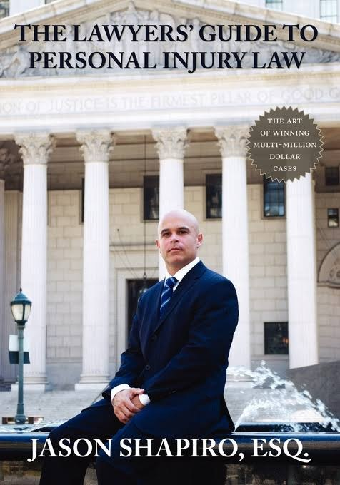

─ Llame para una Consulta Gratis
718.295.7000Shapiro Law Offices, PLLC es un bufete de lesiones personales dedicado a representar a víctimas de accidentes. Fundado por Jason Shapiro, los abogados del bufete llevan casos a juicio — entre ambos han manejado casos de accidentes multimillonarios en tribunales estatales y federales durante décadas.
El bufete se enfoca en todas las áreas de accidentes — accidentes de andamios y construcción, accidentes de vehículos motorizados, accidentes en propiedades y negligencia médica — sirviendo a clientes en los condados de Bronx, Nueva York, Queens, Kings, Westchester, Nassau, Richmond y Rockland.
Fundador
Abogado litigante educado en una universidad de la Ivy League, conferencista y autor del libro de texto The Lawyers’ Guide to Personal Injury Law (Guía del Abogado sobre la Ley de Lesiones Personales). Representa a víctimas de accidentes en El Bronx y toda la ciudad de Nueva York.
Perfil pendiente — nombre por confirmar
[ Marcador de posición ] Este perfil ya está redactado y listo para publicarse. Se mantiene en espera por una sola razón: dos fuentes dan un nombre distinto para este abogado — la propia página Attorney Profiles del bufete, que no se actualiza desde marzo de 2023, y las notas de nuestra reunión sobre el sitio web del 24 de julio de 2026. No publicamos un nombre, una biografía ni una credencial que no podamos confirmar.
Lo que necesitamos de Jason: el nombre completo correcto del abogado, una biografía actual y una fotografía. El perfil se publica el mismo día en que llegue.

Escrito por Jason Shapiro, este es un libro de texto integral para abogados de lesiones personales. El libro analiza, en profundidad, el manejo de todo tipo de casos de accidentes y lesiones.
Llame ahora para hablar con un abogado — la consulta es gratis
Copyright © 2026 - Shapiro Law Offices, PLLC • Todos Los Derechos Reservados.
Attorney Advertising (Publicidad de Abogados). Los resultados anteriores no garantizan un resultado similar. La información presentada en este sitio no debe interpretarse como asesoramiento legal formal ni como la formación de una relación abogado-cliente. Créditos de fotos.